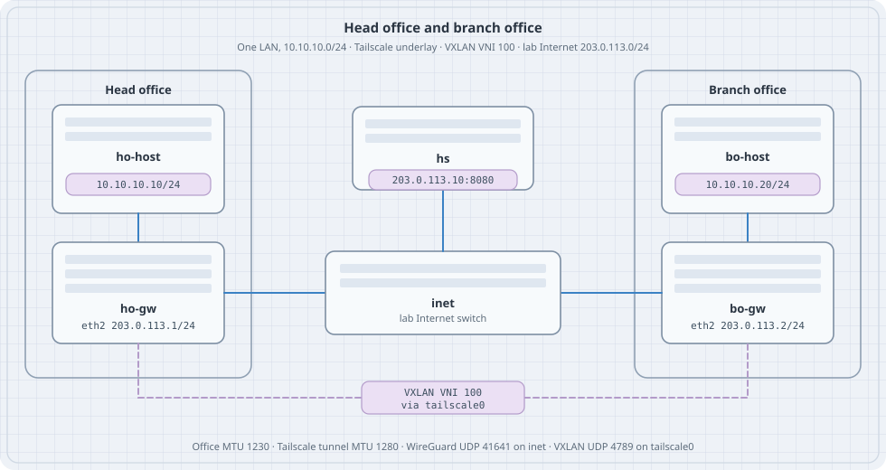

Head Office and Branch Office
Head Office and Branch Office
Two sites, one LAN. Each site is a small office in Containerlab. A Tailscale client on each gateway joins an in-lab tailnet, and VXLAN rides that tailnet so a workstation at the branch ARPs for a host at head office. The lab Internet only carries the encrypted underlay.
Versions this chapter is written against: Headscale 0.29.6 (Tailscale client 1.80 or newer; stable track at the time of writing is 1.104), Debian 13 (trixie) for the gateways and the coordination node, Alpine for the switch and the workstations, Containerlab kind: linux. Deploy needs root, a container runtime, and /dev/net/tun on the host.
Learning goals
By the end of this chapter you can:
- Place Headscale, two Tailscale gateways, and two workstations in one Containerlab topology
- Use each gateway’s Tailscale address as a VXLAN VTEP
- Put both offices on
10.10.10.0/24and prove the path with ARP, ping, and two captures - Size the overlay MTU from Tailscale’s 1280-byte tunnel plus VXLAN overhead
- Add a third site with a flood entry, and name the L3 pattern for offices that use different prefixes
Why this shape
Tailscale already gives the two gateways addresses in 100.64.0.0/10 and encrypts what they send. That is enough when each office has its own prefix and a subnet route. This lab gives both offices the same prefix, 10.10.10.0/24, and treats them as one Ethernet segment: head office holds .10, the branch holds .20, and neither host has a default route.
VXLAN is the segment. VNI 100 is that LAN. The VTEP address is the Tailscale address, and the VTEP device is tailscale0. The lab Internet (203.0.113.0/24, documentation prefix TEST-NET-3) is only how the gateways reach each other and the coordination server.
ho-host 10.10.10.10 -- ho-gw == Tailscale / VXLAN VNI 100 == bo-gw -- bo-host 10.10.10.20
| |
+---- inet (203.0.113.0/24) -- hs -----+
Containerlab can also attach a lab’s management network to a tailnet (mgmt.tailscale in the topology). That feature publishes the lab so you can reach a node from a laptop. It is a different job from the data plane in this chapter.
Roles
| Piece | Job in this lab |
|---|---|
| Headscale | Coordination server the two clients log in to. One tailnet, SQLite, no policy file (the default is permit). |
| Tailscale on ho-gw / bo-gw | Kernel tailscale0. WireGuard UDP 41641 toward the peer. |
| VTEP | vxlan100, VNI 100, local and remote set to the two Tailscale IPv4 addresses, underlay device tailscale0. |
| Office LAN | eth1 and vxlan100 in bridge br100. Workstations sit on eth1. |
| inet | Linux bridge. Shared lab Internet for 203.0.113.0/24. |
Headscale’s own container image is a convenience build; the project documents the binary and the .deb as the supported installs. This lab runs that binary in a Debian node so the node has a shell, ip, and an address you assign yourself.
The coordination URL is plain HTTP on the lab Internet (http://203.0.113.10:8080). Headscale accepts that. A tailnet you keep uses HTTPS on a name you control. This topology does not publish port 8080 on the host.
Topology
Save the next two files in an empty directory. The bind path is relative to the topology file.
hs/config.yaml:
server_url: http://203.0.113.10:8080
listen_addr: 0.0.0.0:8080
metrics_listen_addr: 127.0.0.1:9090
grpc_listen_addr: 127.0.0.1:50443
grpc_allow_insecure: false
noise:
private_key_path: /var/lib/headscale/noise_private.key
prefixes:
v4: 100.64.0.0/10
v6: fd7a:115c:a1e0::/48
allocation: sequential
derp:
server:
enabled: false
urls:
- https://controlplane.tailscale.com/derpmap/default
paths: []
auto_update_enabled: false
disable_check_updates: true
database:
type: sqlite
sqlite:
path: /var/lib/headscale/db.sqlite
write_ahead_log: true
policy:
mode: file
path: ""
dns:
magic_dns: false
base_domain: offices.lab
override_local_dns: false
nameservers:
global: []
search_domains: []
extra_records: []
unix_socket: /var/run/headscale/headscale.sock
unix_socket_permission: "0770"
logtail:
enabled: false
log:
level: info
format: textts-vxlan.clab.yml:
name: ts-vxlan
topology:
nodes:
inet:
kind: linux
image: alpine:3.20
exec:
- sh -c "apk add --no-cache iproute2 && ip link add br0 type bridge && ip link set br0 up && for i in eth1 eth2 eth3; do ip link set $i up; ip link set $i master br0; done"
hs:
kind: linux
image: debian:13-slim
binds:
- hs/config.yaml:/etc/headscale/config.yaml:ro
ho-gw:
kind: linux
image: debian:13-slim
bo-gw:
kind: linux
image: debian:13-slim
ho-host:
kind: linux
image: alpine:3.20
exec:
- sh -c "apk add --no-cache iproute2 iputils"
bo-host:
kind: linux
image: alpine:3.20
exec:
- sh -c "apk add --no-cache iproute2 iputils"
links:
- endpoints: ["ho-host:eth1", "ho-gw:eth1"]
- endpoints: ["bo-host:eth1", "bo-gw:eth1"]
- endpoints: ["ho-gw:eth2", "inet:eth1"]
- endpoints: ["bo-gw:eth2", "inet:eth2"]
- endpoints: ["hs:eth1", "inet:eth3"]Containerlab starts nodes privileged. tailscaled uses that to create tailscale0. Check the host before deploy:
ls -l /dev/net/tun
sudo containerlab deploy -t ts-vxlan.clab.ymlAddressing
| Node | Interface | Address |
|---|---|---|
| ho-host | eth1 | 10.10.10.10/24, MTU 1230 |
| bo-host | eth1 | 10.10.10.20/24, MTU 1230 |
| ho-gw | eth2 | 203.0.113.1/24 |
| bo-gw | eth2 | 203.0.113.2/24 |
| hs | eth1 | 203.0.113.10/24 |
| ho-gw, bo-gw | tailscale0 | assigned from 100.64.0.0/10 |
| ho-gw, bo-gw | br100, vxlan100 | no IP; MTU 1230 |
| VNI | 100 | both offices |
Read the Tailscale addresses after login. Sequential allocation on an empty database usually yields 100.64.0.1 and 100.64.0.2. The scripts below use whatever tailscale ip -4 prints.
Install and address the lab Internet
Debian nodes need packages from the network on eth0. Run this once after deploy.
install_gw() {
local n="$1"
docker exec "$n" bash -c '
apt-get update
apt-get install -y --no-install-recommends \
ca-certificates curl iproute2 iptables tcpdump
install -d -m 0755 /usr/share/keyrings
curl -fsSL https://pkgs.tailscale.com/stable/debian/trixie.noarmor.gpg \
-o /usr/share/keyrings/tailscale-archive-keyring.gpg
curl -fsSL https://pkgs.tailscale.com/stable/debian/trixie.tailscale-keyring.list \
-o /etc/apt/sources.list.d/tailscale.list
apt-get update
apt-get install -y tailscale
'
}
install_gw clab-ts-vxlan-ho-gw
install_gw clab-ts-vxlan-bo-gw
docker exec clab-ts-vxlan-hs bash -c '
apt-get update
apt-get install -y --no-install-recommends ca-certificates curl iproute2
arch=$(dpkg --print-architecture)
curl -fsSL -o /usr/local/bin/headscale \
"https://github.com/juanfont/headscale/releases/download/v0.29.6/headscale_0.29.6_linux_${arch}"
chmod 755 /usr/local/bin/headscale
mkdir -p /var/lib/headscale /var/run/headscale
'
docker exec clab-ts-vxlan-hs ip addr add 203.0.113.10/24 dev eth1
docker exec clab-ts-vxlan-hs ip link set eth1 up
docker exec clab-ts-vxlan-ho-gw ip addr add 203.0.113.1/24 dev eth2
docker exec clab-ts-vxlan-ho-gw ip link set eth2 up
docker exec clab-ts-vxlan-bo-gw ip addr add 203.0.113.2/24 dev eth2
docker exec clab-ts-vxlan-bo-gw ip link set eth2 up
docker exec clab-ts-vxlan-ho-gw ping -c 2 -W 1 203.0.113.10
docker exec clab-ts-vxlan-ho-gw ping -c 2 -W 1 203.0.113.2ip route on a gateway shows 203.0.113.0/24 dev eth2. That connected route is the lab Internet. eth0 remains the Containerlab management network, used here only to install packages.
Start Headscale and join both offices
docker exec -d clab-ts-vxlan-hs \
headscale serve
# socket appears after the first migration
for _ in 1 2 3 4 5 6 7 8 9 10 11 12 13 14 15; do
docker exec clab-ts-vxlan-hs headscale users list && break
sleep 1
done
docker exec clab-ts-vxlan-hs headscale users create offices
docker exec clab-ts-vxlan-hs headscale users listOn a fresh database the user id is 1. If the list shows another id, pass that id below.
KEY=$(docker exec clab-ts-vxlan-hs \
headscale preauthkeys create --user 1 --reusable --expiration 24h)
KEY=$(printf '%s\n' "$KEY" | grep -oE 'hskey[^[:space:]]+' | head -n1)
printf '%s\n' "$KEY"The key is a credential. It is reusable for 24 hours and it is printed into your shell history. Tear the lab down when you finish, and keep the key out of the topology file.
up_site() {
local n="$1" host="$2"
docker exec "$n" bash -c "
mkdir -p /var/lib/tailscale /run/tailscale
tailscaled --state=/var/lib/tailscale/tailscaled.state \
>/var/log/tailscaled.log 2>&1 &
for _ in 1 2 3 4 5 6 7 8 9 10 11 12 13 14 15; do
[ -S /var/run/tailscale/tailscaled.sock ] && break
sleep 1
done
# Management eth0 is a shortcut between every node. Drop WireGuard
# there so the underlay you capture is the lab Internet.
iptables -I OUTPUT -o eth0 -p udp --sport 41641 -j DROP
iptables -I OUTPUT -o eth0 -p udp --dport 41641 -j DROP
iptables -I INPUT -i eth0 -p udp --dport 41641 -j DROP
sysctl -w net.ipv4.conf.all.rp_filter=0
sysctl -w net.ipv4.conf.eth2.rp_filter=0
tailscale up \
--login-server=http://203.0.113.10:8080 \
--auth-key=${KEY} \
--hostname=${host} \
--accept-dns=false \
--accept-routes=false
"
}
up_site clab-ts-vxlan-ho-gw head-office
up_site clab-ts-vxlan-bo-gw branch-office
docker exec clab-ts-vxlan-ho-gw tailscale ip -4
docker exec clab-ts-vxlan-bo-gw tailscale ip -4
docker exec clab-ts-vxlan-ho-gw tailscale statusPredict
- Each gateway has one address in
100.64.0.0/10ontailscale0. tailscale statuslists the other office as a peer, pathdirect.tailscale ip -4is the VTEP address you will pass to VXLAN.
Ping the peer’s Tailscale address from head office before you build the overlay. That ping is the underlay.
VXLAN on the tailnet
HO=$(docker exec clab-ts-vxlan-ho-gw tailscale ip -4 | head -n1)
BO=$(docker exec clab-ts-vxlan-bo-gw tailscale ip -4 | head -n1)
vxlan_up() {
local n="$1" local_ip="$2" remote_ip="$3"
docker exec "$n" bash -c "
sysctl -w net.ipv4.conf.all.rp_filter=0
sysctl -w net.ipv4.conf.tailscale0.rp_filter=0
ip link add br100 type bridge
ip link set br100 mtu 1230
ip link set br100 up
ip link add vxlan100 type vxlan id 100 \
local ${local_ip} remote ${remote_ip} \
dev tailscale0 dstport 4789
ip link set vxlan100 mtu 1230
ip link set vxlan100 up
ip link set eth1 up
ip link set eth1 master br100
ip link set vxlan100 master br100
"
}
vxlan_up clab-ts-vxlan-ho-gw "$HO" "$BO"
vxlan_up clab-ts-vxlan-bo-gw "$BO" "$HO"
docker exec clab-ts-vxlan-ho-host sh -c '
ip link set eth1 mtu 1230
ip addr add 10.10.10.10/24 dev eth1
ip link set eth1 up
'
docker exec clab-ts-vxlan-bo-host sh -c '
ip link set eth1 mtu 1230
ip addr add 10.10.10.20/24 dev eth1
ip link set eth1 up
'tailscale0 stays out of br100. It is the underlay port VXLAN encapsulates toward. The bridge holds the office LAN and the VTEP.
MTU, IPv4, from the outside in:
| Layer | Size |
|---|---|
| Tailscale tunnel MTU | 1280 |
| Outer IPv4 + UDP + VXLAN + inner Ethernet | 20 + 8 + 8 + 14 = 50 |
| Office LAN MTU | 1280 − 50 = 1230 |
A 1230-byte inner IP packet is 1202 bytes of ICMP payload (ping -s 1202) plus 8 bytes of ICMP and 20 bytes of IPv4.
Drill — MTU
docker exec clab-ts-vxlan-ho-host ping -c 1 -W 2 -M do -s 1202 10.10.10.20
docker exec clab-ts-vxlan-ho-host ping -c 1 -W 2 -M do -s 1203 10.10.10.20Predict
1202 passes. 1203, with don’t-fragment set, fails. The office LAN is 1230 bytes, and the next byte does not fit.
Drill — wrong VNI
docker exec clab-ts-vxlan-bo-gw ip link set vxlan100 down
docker exec clab-ts-vxlan-bo-gw ip link del vxlan100
docker exec clab-ts-vxlan-bo-gw bash -c "
ip link add vxlan100 type vxlan id 200 \
local ${BO} remote ${HO} dev tailscale0 dstport 4789
ip link set vxlan100 mtu 1230 up
ip link set vxlan100 master br100
"
docker exec clab-ts-vxlan-ho-host ping -c 2 -W 2 10.10.10.20Predict
The underlay ping between Tailscale addresses still works. The workstation ping stops. VNI 200 is a different segment.
Put VNI 100 back with the vxlan_up function before the next drill.
A third office
Two VTEPs can name each other with remote. A third gateway is a flood list instead of a single remote. On each VTEP, for every peer:
ip link add vxlan100 type vxlan id 100 local "$LOCAL" dev tailscale0 dstport 4789
bridge fdb append 00:00:00:00:00:00 dev vxlan100 dst "$PEER_A"
bridge fdb append 00:00:00:00:00:00 dev vxlan100 dst "$PEER_B"00:00:00:00:00:00 is the head-end replication entry: broadcast, unknown unicast, and multicast are copied to each listed Tailscale address. Three offices means two copies of every ARP. That cost is why a control plane exists; this chapter stays on the static list so you can see the copies.
Offices that should stay two networks
Give the sites different prefixes when a host at the branch should route to head office, and ARP should stop at the local gateway. The same two Tailscale nodes can advertise those prefixes:
tailscale up \
--login-server=http://203.0.113.10:8080 \
--auth-key="$KEY" \
--hostname=head-office \
--advertise-routes=10.10.0.0/24 \
--accept-dns=falseApprove the route on Headscale (headscale nodes list, then the routes subcommand for that node) and start the peer with --accept-routes. Head office might be 10.10.0.0/24 and the branch 10.20.0.0/24. Each workstation uses its gateway as the default route. There is no bridge and no VNI.
Use that pattern when the prefixes differ. Use VNI 100 when you want one 10.10.10.0/24 and working ARP across the two rooms.
Same exercise on a tailnet you already run
The VXLAN lines do not change if Headscale is replaced by a coordination server you already use. On each gateway:
tailscale up --auth-key="$TS_AUTHKEY" --hostname=head-office \
--accept-dns=false --accept-routes=falsePass --login-server only when the client should use a server other than the default. Read tailscale ip -4 and use those addresses as local and remote. Keep the preauth key in an environment variable, not in ts-vxlan.clab.yml.
The official tailscale/tailscale image runs userspace networking unless TS_USERSPACE=false. Userspace mode has no kernel tailscale0, so VXLAN has nothing to bind to. This lab uses the packaged tailscaled in a privileged node, which creates the interface.
Failure table
| What you see | What to check |
|---|---|
headscale serve exits at once |
docker exec clab-ts-vxlan-hs headscale serve in the foreground. The usual causes are a missing /var/lib/headscale or a dns block the binary rejects. |
users list has no socket |
The server is still migrating. Wait, then read /var/log or the foreground log. |
tailscale up never gets an address |
Ping 203.0.113.10 from the gateway. The login URL has to be that address, the same string as server_url. |
Peer stuck, no direct |
tailscale status and iptables -S on the gateway. UDP/41641 has to be allowed on eth2 and dropped on eth0. |
| Underlay ping works, host ping does not | ip -d link show vxlan100 (VNI, local, remote, dev tailscale0), both ports in br100, host MTU 1230. |
| Host ping dies after a large packet | MTU 1230 on vxlan100, br100, and both workstations. |
| ARP never fills | rp_filter on tailscale0 and all. Set both to 0. |
inet shows UDP/4789 |
The VTEP was bound to eth2 or to 203.0.113.x. local has to be the Tailscale address and dev has to be tailscale0. |
Tear down
sudo containerlab destroy -t ts-vxlan.clab.yml --cleanupHeadscale’s database and the Tailscale state files live in the container writable layer. Destroy removes them with the nodes. The preauth key dies with the database.
Checklist
| Check | What it shows |
|---|---|
Ping 203.0.113.10 and the peer .2 |
Lab Internet is up |
tailscale ip -4 on both gateways |
VTEP addresses exist |
| Ping the peer Tailscale address | Underlay, before any VNI |
tailscale0 in ip -d link show vxlan100 |
Encap device is the tailnet |
Host ping and ip neigh |
One LAN, VNI 100 |
UDP/41641 on inet, UDP/4789 on tailscale0 |
Header order |
ping -M do -s 1202 and -s 1203 |
1230-byte office MTU |
Summary
- The two gateways log in to Headscale and become each other’s underlay.
- VNI 100 bridges
10.10.10.10and10.10.10.20acrosstailscale0. - The lab Internet sees WireGuard. The Tailscale interface sees VXLAN.
- Office MTU is 1230 because the tunnel is 1280 and VXLAN adds 50 bytes of IPv4 overhead.
- A third site is another flood entry. Different prefixes are subnet routes on the same clients, with no bridge.